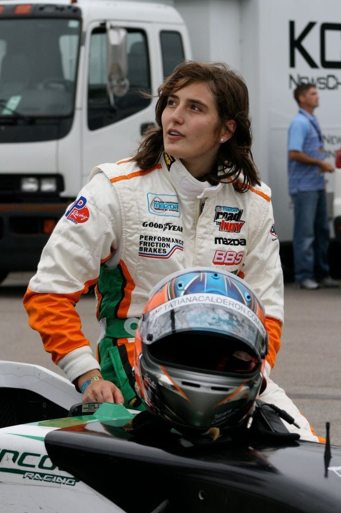

As I’ve said previously, this project is extremely special to me and having the chance to talk to such incredible people, is something really magical and inspiring. The motorsport world is big and we barely get to see a fraction of it, but what if we take a look behind the scenes?
Everyone is already familiar with the diversity in the sport, which is pretty low. Important figures and role models have spoken about it, such as Lewis Hamilton. But little do some people know, that female drivers exist and we can only appreciate them for everything they do for the little girls dreaming of one day working or racing in the sport. For me, it meant a lot to discover all of the amazing, talented women working in motorsport, because they all represent an inspiration for the future career I dream of having, working in Formula 1.
Photograph: Autosport
This time, I had the pleasure of speaking to Tatiana Calderón, a female racing driver. She started karting at 9 years old and has since competed in multiple series: Formula 3, Formula 2, 24 Hours at Daytona, European Le Mans Series, World Endurance Championship, Indycar and many more. She was a test driver for Alfa Romeo F1 team and became the first Latin American woman to drive a Formula 1 car. She’s had mentors like Anthony Hamilton and Susie Wolff along her career. She’s broken records and showed that women can have a place in the sport. She is a big inspiration for me and certainly someone I admire. But I want to let you all find out more about her through her own words.
For the people that don't know you that well, could you please tell us a bit about who you are and what exactly do you do in motorsport?
“I'm Tatiana Calderon, I'm a racing driver from Colombia. My dream has always been to become a F1 driver. I have been racing for 20 years now and besides still wanting to achieve a lot of things in Motorsport as a driver I also want to give back to the sport and help get more women interested and with better opportunities.”
What do you find most attractive about the sport?
“I love challenging myself to surpass what think it's the limit on every corner of every lap! I love the technical side of the sport and all the details that need to come right for you to extract the maximum performance”
What do you enjoy most about your work? What about the least?
“I love being on any race car in any race track! It's worth all the hard work, I guess what don't enjoy is always stressing about sponsorship to continue racing...”
What is one bold prediction you have for the next Formula 1 season?
“The championship will be decided on the last race and last lap again ;)”
Photograph: Sutton Images
What do you think makes winning so special?
“As winning is so difficult in this sport because it depends on so many factors. When you cross the finish line first and you know you gave your best and all that hard work paid off. There is no better feeling for sure!”
If you could change one thing about the sport, what would that be?
“The cost and budgets to go racing are crazy right now.”
What would you say is one of the things least known by fans about the sport?
“I think the amount of work the driver and the team have to put in order to be on the grid. Sometimes from the outside it looks easier and we get judge harshly sometimes. People don't realize it is also a team sport and a lot of factors that the driver can't control influence the result. It would be great to give fans more inside and "confidential" information for them to understand better.”
What is one thing you've learnt from the sport that you also use in your everyday life?
“Everything, how to handle frustration, adversity, pressure. Also how to organize time. I have learnt about myself, my body, my mind and what works for me so I think sport is essential to teach you about life.”
What advice would you give to someone who wants to work in Formula 1 or motorsport?
“I think that anything is possible if you believe in yourself, you work hard and you never give up. If that's your passion then go for it!”
And lastly, is there anything else you'd like to say to your fans?
“I want to thank them for their support it really means a lot to go home after a difficult or good weekend and read their messages. And I would like to remind some of the haters as well that words can be harmful too and we all have feelings so to be good to one another online is very important:)”
Photograph: Stellantis
I want to thank Tatiana from deep down my heart for accepting to do this interview. I absolutely loved reading these. It is nice to get a fresh perspective from a woman, rather than a man. It’s never been easy to work in an industry full of men and I appreciate her for that. Tatiana, I want to wish you all of the best as you continue to inspire young girls and teenagers on their road to motorsport or Formula 1. I hope your career continues to flourish and I can’t wait to see you racing again. Make sure you all follow her career and you can find her on Instagram as @tatacalde7.
I still have a few interviews left and I really appreciate all of the people that have agreed to do this with me. This sport has given me a lot and I want to also give something back. You can find me on socials, the links are down below. If you have any questions, feel free to dm me or email me. Stay in touch to find out when I’ll post the next article. Until next time, don’t forget to go racing!